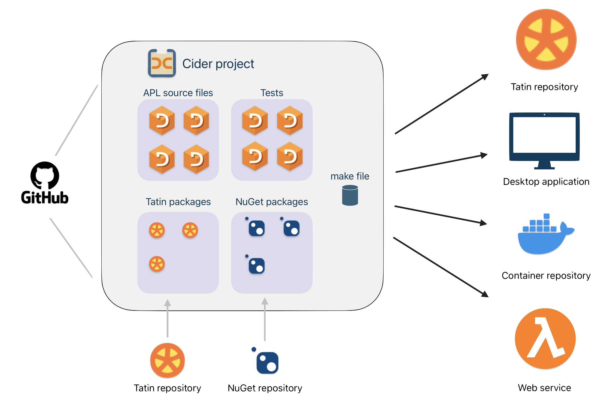

About Cider
Cider is a project manager for Dyalog APL.

If you write software for others to use Cider helps you manage
- the software you publish
- the files you make it from
- any imported packages it depends on
- the versions you produce
When you open a project
Cider creates its namespace (project space) in the active workspace then
- defines its APL objects in the project space, linked to their source files
- loads its Tatin and NuGet packages
- executes the project’s initialisation function
- executes your global initialisation function
- displays the project’s to-do list and Git status
You use Cider through its user commands or its API functions.
Related tools
Cider cooperates with
Requirements
- Dyalog Unicode Edition version 18.2 or better
- Your APL source kept in text files
- Tatin version 0.116.0 or better
Dyalog v19.0 has Cider and Tatin installed. For Dyalog v18.2, Cider and Tatin have to be installed.
Glossary
- alias
- A short name for a project, used as an alternative to the project path. Aliases are not case sensitive.
- flag
-
The meaning depends on context:
- In the API or configuration, a boolean; a flag is ‘set’ with 1.
- In the user commands, a parameter without a corresponding value: for example in
]CIDER.OpenProject path/2/project -watch, thewatchflag is set.
- list of strings
- A nested vector of strings, e.g.
'quick' 'brown' 'fox' - parameter namespace
- A namespace of variables representing parameters
- project folder
- Where the project is defined in the filesystem
- project space
- The namespace in which Cider builds the project
- project path
- The filesystem path to the project folder
- string
- A simple character vector, e.g.
'quick'
Acknowledgements
Cider is developed from more than a decade of earlier work, primarily by Phil Last and Paul Mansour on the Acre source-code manager.
-
Cider is designed to work with the popular Git source control manager, but can be used with others. ↩